Afinado del arte inca: el hondero
Voz 4 · Experto en arte de AoE: qué piezas hacen falta y a qué tamaño
- Tamaños reales en Raíces (src/game/hud.gd): grilla de producción 62 px, retrato de la selección 112 px, selección múltiple 40–56 px. Con eso, la cara mide 15–20 px en la grilla y 35–45 px en el retrato: la cara tiene que leerse como andina a 112 px, con rasgos grandes, no con detalles.
- AoE no tiene retratos por edad. En AoE2 el equipo cambia por línea de unidad; en AoE4 el veterano y el élite comparten arte y la edad se ve en el modelo 3D. Los íconos no se recolorean: el color del jugador va en el modelo y en el marco (aprox.).
- Recomendación: un arte por unidad que sirva de ícono y de retrato, sin retrato por edad (salvo el aldeano). Edad: en el 3D y con un distintivo chico que dibuja el juego. Un ícono por edificio, sin variantes por edad. Una hoja 3D por unidad, con accesorios por edad. Máscara recoloreable en el 3D; en los íconos, color de jugador en el marco (lo decide el autor).
- Cuenta: de 1433 imágenes a ~670.
Estudio de caras · rasgos andinos (Historiadora)
Rasgos frecuentes en las poblaciones quechua y aymara de los Andes, descritos sin caricatura: cara ancha y de pómulos marcados; nariz grande, a menudo convexa o aguileña y de puente alto; ojos oscuros con el párpado superior visible (sin el pliegue epicántico marcado de Asia oriental); piel cobriza curtida por el sol de altura, con mejillas enrojecidas por el frío y la altura; pelo negro, grueso y lacio; cuerpo robusto de pecho ancho (adaptación a la altura: Beall, 2007, PNAS [verificar]). Iconografía: los huacos retrato moche (100–800 d. C., costa norte) son la referencia prehispánica más realista de rostros andinos; Guaman Poma (1615) y los keros coloniales son estilizados y sirven para la ropa, no para la cara. Referencias de dominio público usadas: «Aymara Indians», óleo anónimo hacia 1890–1892, Smithsonian American Art Museum (Commons, dominio público); Francisco Laso, «Indio alfarero» (1855) y «La hilandera» (h. 1849) (Commons, dominio público). Descartada: «Andean Man» (2007, CC BY-SA, persona identificable actual).
Receta: Retrato recoloreable del hondero (regla nueva)
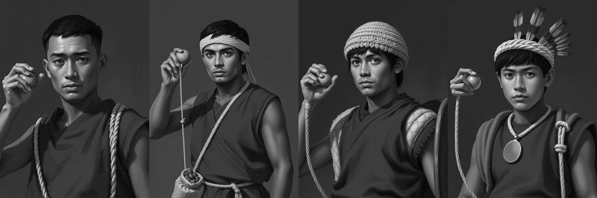
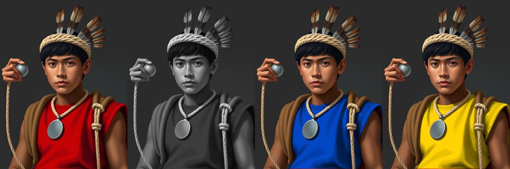
FLUX schnell, 4 pasos, 768×1024, semilla 7. Orden: ESTILO (primera frase; solo esta cambia entre A, B y C) → CARA («A young-looking smooth hairless face with a bare upper lip and bare chin, like the Inca men who plucked their facial hair with tweezers.») → ACCIÓN (piedra en la mano junto a la cara, honda fina sobre el hombro) → EQUIPO DE LA EDAD (lo que se agrega: nada / vincha y bolsa / casco «like a basket», acolchado y escudo / cresta de plumas «like a fan», capa y un solo disco de plata «pewter-grey») → ZONA DEL EQUIPO: «a plain solid bright red sleeveless wool tunic, one flat uniform red color» → «Natural undyed tones for everything except the tunic» → persona → encuadre. Después: tools/recolorear.py imagen.png --hoja x.jpg guarda imagen_mascara.png (rojo con S ≥ 0.45, solo las manchas grandes, borde suave).
Receta: Ícono y hoja 3D del hondero
ÍCONO: FLUX schnell, 4 pasos, 1024×1024, semilla 31. Estilo (igual al retrato) → cara → ACCIÓN con una comparación que el modelo conozca («whirls his sling above his head like a lasso … a woven pouch holding a big round grey stone at the far end of the loop») → ropa de la edad II → persona con «realistic adult proportions with long legs» → «Full body from head to feet, three-quarter view, plain flat light grey background». Después: recorte automático al cuerpo con 8 % de margen y --sin-fondo. Evitar: «game unit icon» (render 3D), brazo atrás + brazo adelante (sale arco), «big» con piedras sueltas (bolas de boliche). HOJA 3D: FLUX schnell, 4 pasos, 1344×896, semilla 31. Estilo → «Character turnaround reference sheet for 3D modeling: the same man shown side by side in front view and in side profile view, the same helmet or headband on his head in every view, identical clothing in every view, standing in A-pose … open empty hands» → «Clothing: …» de la edad → «The tunic hangs straight and loose from the shoulders» → persona → «Even flat studio light, plain light grey background». Sale con 3 o 4 vistas (frente, tres cuartos, perfil, a veces espalda). Pendiente: FLUX agrega un cinturón de soga y deja las palmas hacia arriba.
Receta: Retrato del hondero (4 edades)


Modelo: FLUX.1 schnell Q4, 4 pasos, 768×1024, semilla 7 fija para las 4 edades. Sin IP-Adapter. Plantilla (en este orden): 1. ESTILO: «Stylized digital painting in the style of Age of Empires IV unit portraits, simplified shapes, bold clear silhouette, few large brushstrokes, little fine detail.» (A: «Alla prima oil sketch in the style of John Singer Sargent…»; C: «Gouache illustration in the style of a mid-century storybook…») 2. CARA: «A smooth hairless face … like the Inca men who plucked their facial hair with tweezers.» 3. ACCIÓN DEL OFICIO, con el objeto que identifica en la mano junto a la cara. 4. ROPA DE LA EDAD: un color dominante distinto por edad y piezas concretas. 5. PERSONA: «Native American man of the Andes, Quechua, about 30 years old, smooth face, broad cheekbones…» 6. ENCUADRE: «Chest-up portrait, dark backdrop». Evitar: negaciones («beardless» trae barba), «strong jaw» (trae barba), «copper» (sale oro), cordones con piedra cerca del cuello (salen collares).
CARAS APROBADAS (esperando al autor)
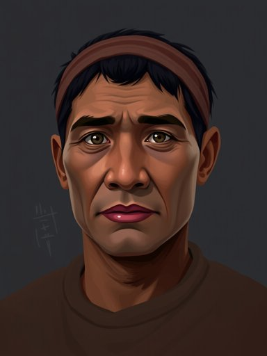

A 112 px se leen andinos: cara ancha, nariz grande, piel cobriza y mejillas rojas. En el hombre los labios son demasiado rosados.
Aprobadas, con la salvedad de que el hombre todavía es algo genérico.
Receta: gentilicio primero («Native American Quechua man from the Peruvian Andes» / «Peruvian Andean highlander woman … near Cusco») y después la cara ancha, la nariz aguileña, los ojos con doble párpado, la piel cobriza y las mejillas rojas. Evitar «fringe», «heavy-lidded» en hombres y «almond».
Antes de usarlas en las unidades: probar que la cara sobreviva con la ropa de cada unidad.
Decisión: Esperando la opinión del autor.
Caras 6 · túnica y lliklla, labios oscuros
Mujer 11: la mejor. El hombre 23 cambió de cara al cambiar el texto de la ropa: se angostó y rejuveneció.
La mujer con manto de lana cruda es correcta.
Problema clave: en FLUX la cara NO queda fija con la semilla si cambia el resto del prompt. Para fijarla en todas las unidades hay que partir de la cara aprobada (img2img o IP-Adapter con ella), no solo de la descripción.
—
Decisión: Aprobados para que opine el autor: hombre c05_m23 y mujer c06_f11.
Caras 5 · ¿la descripción sostiene la cara con otra semilla?
Hombre 23: cara ancha, nariz grande, piel cobriza; a 112 px se lee andino. Las dos mujeres funcionan.
Plausible para quechua y aymara, sin caricatura. Sobran el suéter de cuello alto (moderno) y los aros chicos.
La descripción sostiene la cara en dos de cada tres semillas.
A 112 px las dos se leen.
Decisión: Arreglar la ropa y los labios.
Caras 4 · «Native American Quechua man», ancla en los huacos moche
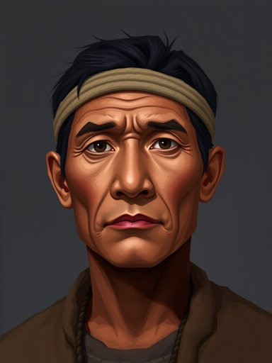
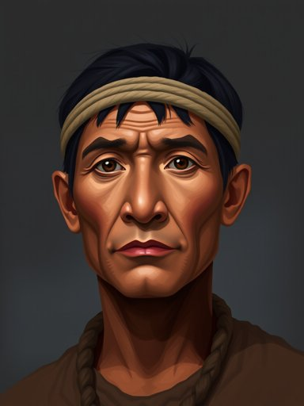
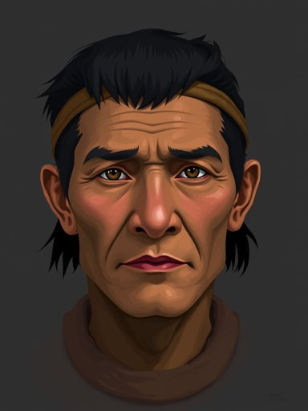
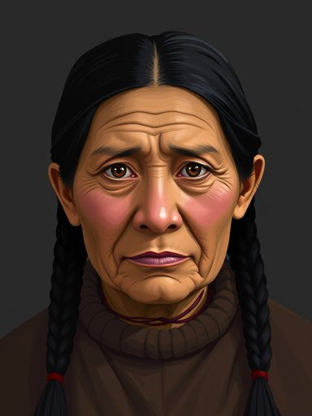
La semilla 11 da la cara más ancha y americana; la 7 se queda en su composición.
Sin aros: bien.
«Moche portrait vessels» no cambia nada. «Native American» sí mueve la cara hacia América.
—
Decisión: Probar si la descripción sostiene la cara con otra semilla.
Caras 3 · pelo corto con vincha, «Aymara del Titicaca», otra semilla
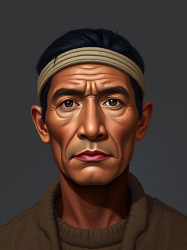
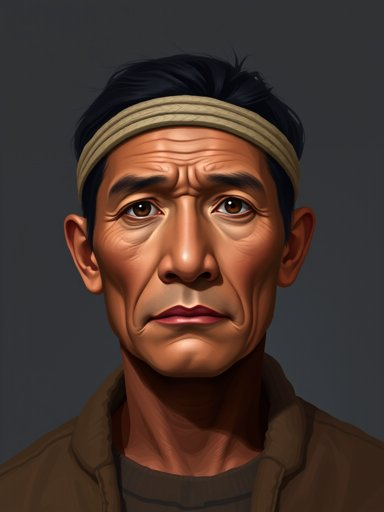
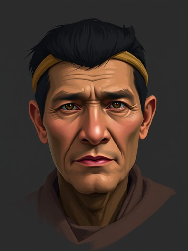
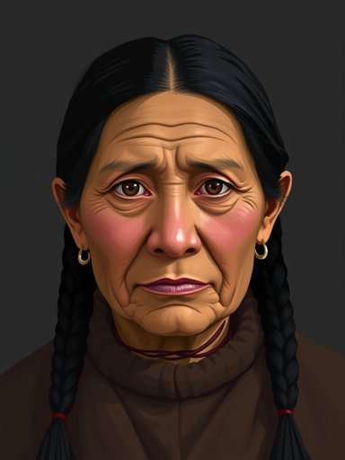
Hombre con semilla 7: parece del Himalaya. La mujer con semilla 11 se lee andina a 112 px.
La mujer lleva aros dorados: van fuera.
«Heavy-lidded» probablemente empuja a Asia. «Aymara» y «Cusco» dan casi lo mismo.
—
Decisión: Probar «Native American Quechua» y ojos con doble párpado.
Caras 2 · FLUX contra SDXL + IP-Adapter con un óleo de dominio público
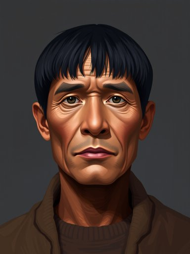
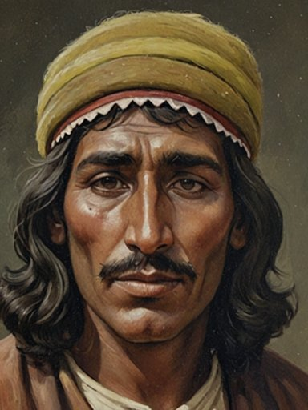
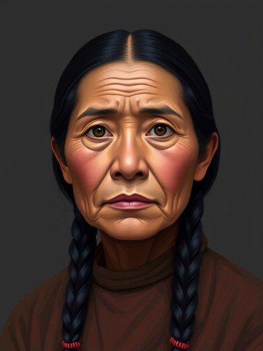
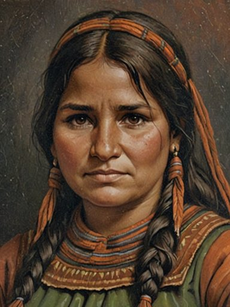
La mujer de FLUX es la primera que parece andina. El hombre de FLUX, con flequillo, se va a Asia oriental.
El SDXL con referencia sale del sur de Asia o del Mediterráneo, con bigote: no sirve. Además copia el gorro del cuadro.
El corte con flequillo («fringe») arrastra a Asia oriental. Las referencias de dominio público tienen caras chicas y borrosas: el IP-Adapter copia la ropa y la luz, no los rasgos.
—
Decisión: Seguir con FLUX y cambiar el pelo del hombre.
Caras 1 · rasgos solos contra rasgos + «Peruvian Andean highlander»
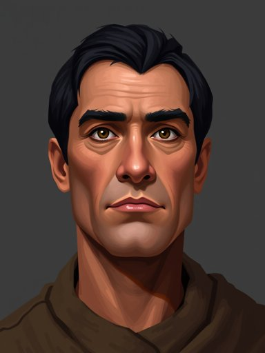
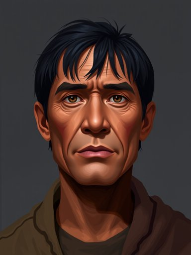
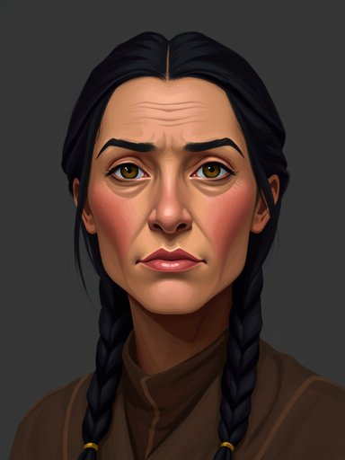
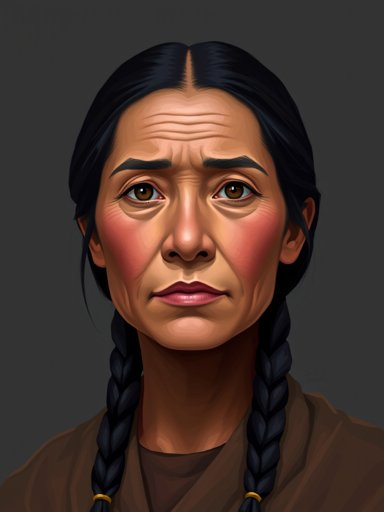
Solo con los rasgos salen caras europeas: la descripción sola no alcanza.
Con «Peruvian Andean highlander» se acerca, sobre todo la mujer.
Medido: sin gentilicio el modelo se va a Europa; el gentilicio pesa más que la lista de rasgos.
A 112 px se lee la forma de la cara y el color; los detalles de los ojos no.
Decisión: Mantener el gentilicio, ensanchar la cara, probar referencias.
GANADOR · retrato recoloreable en 4 edades
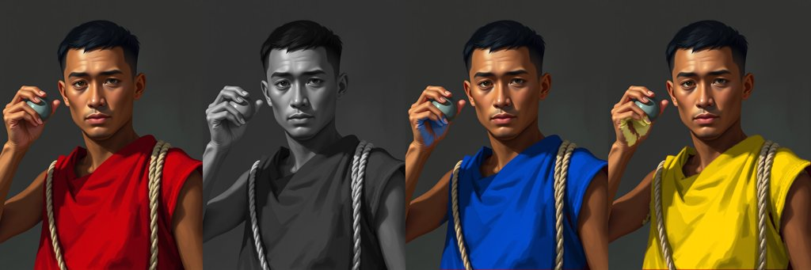
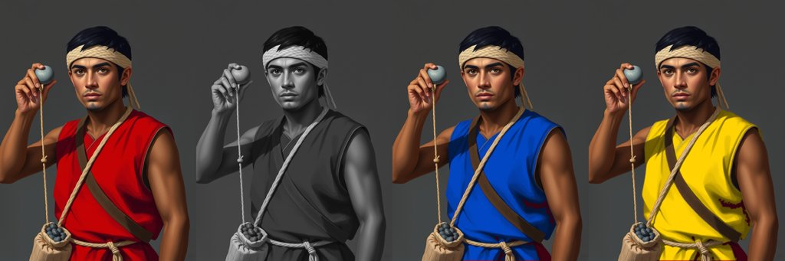
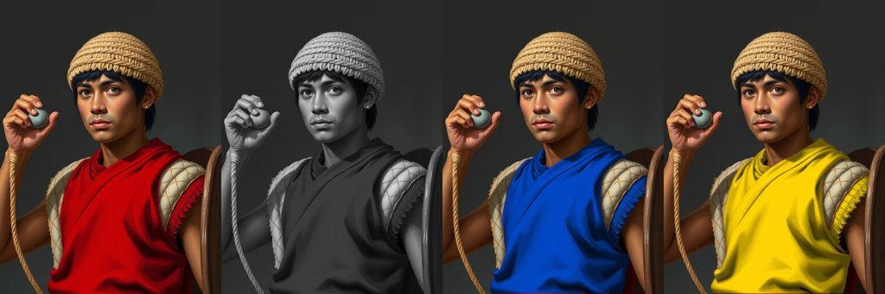
Prompt edad 1
Stylized digital painting in the style of Age of Empires IV unit portraits, simplified shapes, bold clear silhouette, few large brushstrokes, little fine detail. A young-looking smooth hairless face with a bare upper lip and bare chin, like the Inca men who plucked their facial hair with tweezers. A slinger raises his right hand beside his face holding a round grey river stone, and a thin braided cream wool sling, thin as a shoelace, hangs over his shoulder. He wears only a plain solid bright red sleeveless wool tunic, one flat uniform red color; his head is bare, with uncovered black hair. Native American man of the Andes, Quechua, about 30 years old, smooth face, broad cheekbones, deep-set dark eyes, brown skin, straight black hair cut in a fringe, bare brown arms. Natural undyed tones for everything except the tunic. Chest-up portrait, dark grey backdrop
Prompt edad 2
Stylized digital painting in the style of Age of Empires IV unit portraits, simplified shapes, bold clear silhouette, few large brushstrokes, little fine detail. A young-looking smooth hairless face with a bare upper lip and bare chin, like the Inca men who plucked their facial hair with tweezers. A slinger raises his right hand beside his face holding a round grey river stone, and a thin braided cream wool sling, thin as a shoelace, hangs over his shoulder. He wears a cream wool headband and a plain solid bright red sleeveless wool tunic, one flat uniform red color; a strap across his chest holds a cream woven bag full of stones at his hip. Native American man of the Andes, Quechua, about 30 years old, smooth face, broad cheekbones, deep-set dark eyes, brown skin, straight black hair cut in a fringe, bare brown arms. Natural undyed tones for everything except the tunic. Chest-up portrait, dark grey backdrop
Prompt edad 3
Stylized digital painting in the style of Age of Empires IV unit portraits, simplified shapes, bold clear silhouette, few large brushstrokes, little fine detail. A young-looking smooth hairless face with a bare upper lip and bare chin, like the Inca men who plucked their facial hair with tweezers. A slinger raises his right hand beside his face holding a round grey river stone, and a thin braided cream wool sling, thin as a shoelace, hangs over his shoulder. He wears a round helmet woven from tan cane strips like a basket, thick quilted cotton armor of natural undyed cream stitched in diamonds over a plain solid bright red sleeveless wool tunic, one flat uniform red color, and the rim of a small round wooden shield shows on his back behind his shoulder. Native American man of the Andes, Quechua, about 30 years old, smooth face, broad cheekbones, deep-set dark eyes, brown skin, straight black hair cut in a fringe, bare brown arms. Natural undyed tones for everything except the tunic. Chest-up portrait, dark grey backdrop
Prompt edad 4
Stylized digital painting in the style of Age of Empires IV unit portraits, simplified shapes, bold clear silhouette, few large brushstrokes, little fine detail. A young-looking smooth hairless face with a bare upper lip and bare chin, like the Inca men who plucked their facial hair with tweezers. A slinger raises his right hand beside his face holding a round grey river stone, and a thin braided cream wool sling, thin as a shoelace, hangs over his shoulder. He wears a braided cream headband with a tall crest of upright brown and white feathers standing straight up at the front, like a fan, as a mark of rank, a short cape of undyed brown wool tied at the chest and covering both shoulders, one single flat pewter-grey silver disc on his chest, and a plain solid bright red sleeveless wool tunic, one flat uniform red color. Native American man of the Andes, Quechua, about 30 years old, smooth face, broad cheekbones, deep-set dark eyes, brown skin, straight black hair cut in a fringe, bare brown arms. Natural undyed tones for everything except the tunic. Chest-up portrait, dark grey backdrop
Cumple la regla: en gris se ve la edad, y al recolorear se cambia la túnica y nada más. Pendiente: las caras quedaron más jóvenes que en la ronda 20 y la de IV parece un adolescente; en I, III y IV la honda es un rollo de soga más que una honda.
Validado con las salvedades de I (cabeza descubierta y descalzo como simplificación). Sin oro y sin nada sagrado.
Rojo saturado plano con «one flat uniform red color» y «Natural undyed tones for everything except the tunic»: la máscara HSV cubre del 19 al 28 % de la imagen y no toca la piel.
Decisión: Esperando la opinión del autor.
Ronda 23 · III y IV corregidos
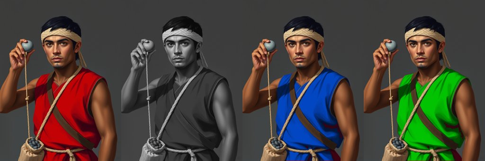
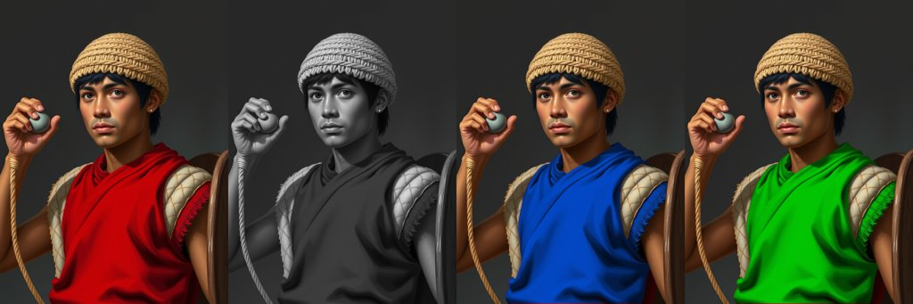
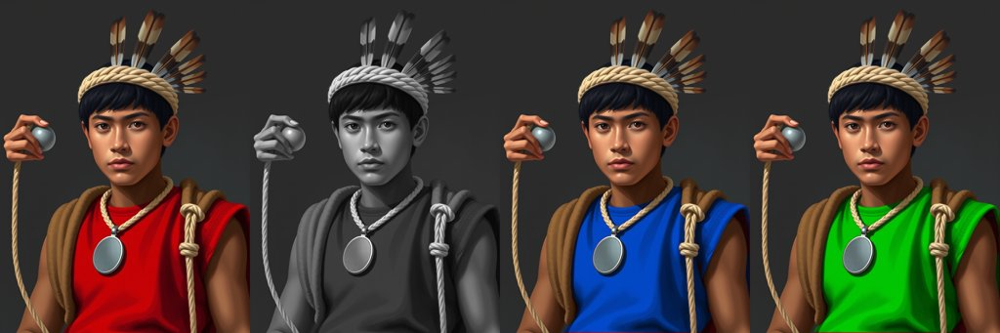
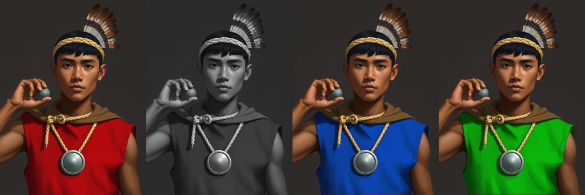
III: casco de cestería, hombros acolchados y escudo; se lee en gris. IV con semilla 7: cresta, capa y un solo disco de plata; la silueta es otra.
Correcto: un solo disco de plata, la capa de lana cruda, una cresta corta de plumas y nada de oro.
Las comparaciones («like a basket», «like a fan») vuelven a funcionar mejor que las descripciones.
Decisión: Ganadoras: I y II de la 22, III y IV (semilla 7) de la 23.
Ronda 22 · cara lampiña, honda fina, plumas cortas
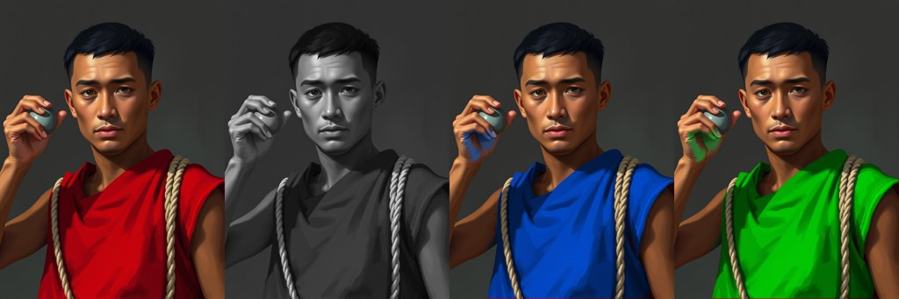
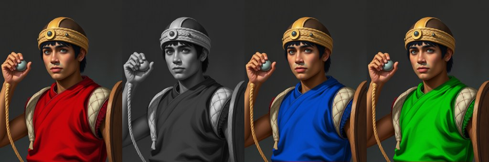
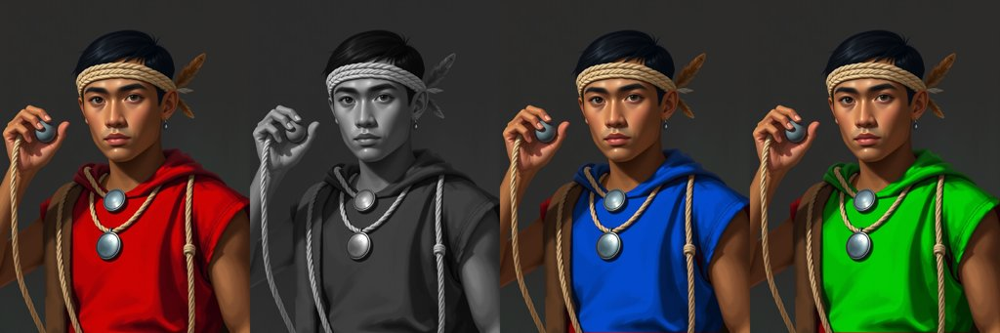
Caras limpias. II es la mejor: la honda fina con la piedra en la mano se lee. IV perdió el rango: las plumas casi no se ven, salieron dos discos y la capa parece capucha. El casco de III salió de metal con una joya.
Un casco de metal con gema no corresponde; el de caña sí.
Lo que va primero manda: «bare upper lip» sacó el bigote, pero también rejuveneció las caras.
Decisión: Quedan I y II. Rehacer III (casco «like a basket») y IV (cresta de plumas, capa atada).
Ronda 21 · RECOLOREABLE: edades por equipo, túnica roja plana
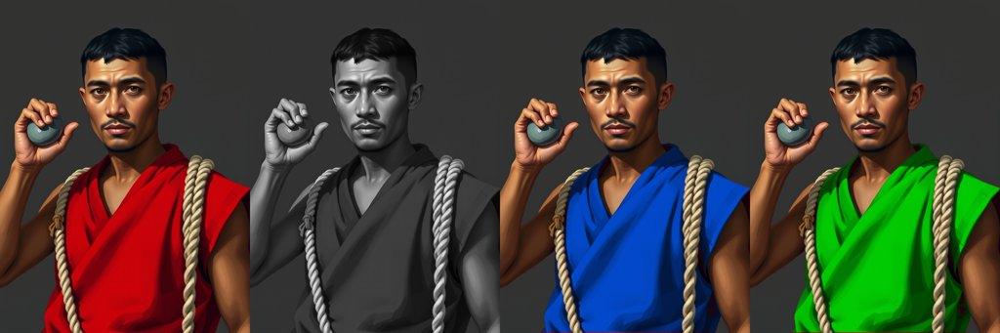
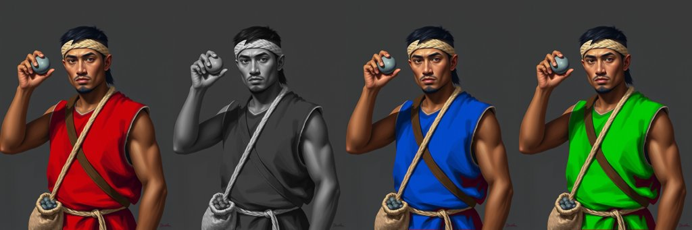
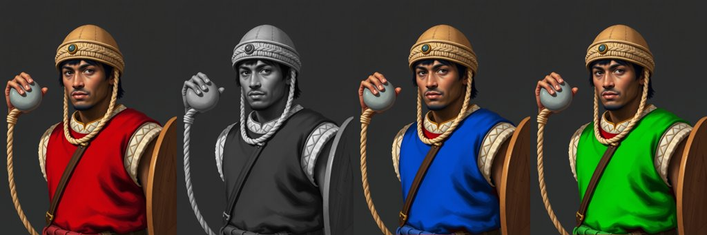
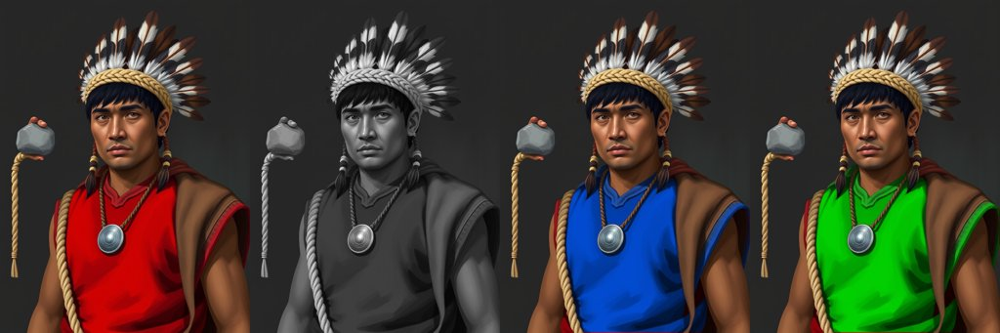
En gris ya se distinguen I, II y III por la cabeza (descubierta, vincha, casco) y lo que cargan. El rojo plano se recolorea limpio.
Validación de la lista del autor: I con la cabeza descubierta es una simplificación (el llawtu era casi universal en los hombres andinos; vale como leva campesina). Descalzo, igual: el común usaba usuta. III: algodón acolchado, casco de caña y escudo, Cobo 1653 [verificar capítulo]. IV: el penacho de plumas tipo «warbonnet» de las praderas es un estereotipo ajeno a los Andes: no va. El rango inca se marcaba con unas pocas plumas erguidas en el llawtu, discos de metal y mantos (Guaman Poma dibuja capitanes con plumas sobre la cabeza [verificar lámina]).
La primera máscara tomaba labios, orejas y yemas de los dedos: se quedan solo las manchas grandes (scipy). «Headdress of feathers» trae el warbonnet.
Decisión: Penacho andino en IV; cara sin bigote.
Hoja 3D 4 · GANADORA: casco en todas las vistas
III con 31: casco en las cuatro vistas, frente-perfil-tres cuartos-espalda. La 37 rompe (frente sin túnica).
IV: el llawtu falta en un perfil; queda la de la ronda 3.
Nombrar el accesorio «en todas las vistas» lo sostiene.
Decisión: Hojas: I, II y IV de la ronda 3; III de esta.
Hoja 3D 3 · cuatro edades, semilla 31
Las cuatro coherentes. III pierde el casco en los perfiles.
El cinturón sigue. II ya tiene la banda horizontal de tocapu.
«palms down» no lo toma: las palmas quedan hacia arriba.
Decisión: Arreglar el casco de III.
Hoja 3D 2 · ropa idéntica en cada vista
Con 31 funciona en tres edades.
FLUX agrega un cinturón de soga con borlas que no pedimos; el unku iba suelto. IV con varios discos.
Pedir la caída suelta en positivo.
Decisión: Las 4 edades con semilla 31.
Hoja 3D 1 · dos maneras de pedirla
Turnaround 31: tres vistas coherentes (frente, tres cuartos, perfil), manos vacías.
En otras, una vista sin túnica: inconsistente.
Semilla 31 arma las vistas; la 7 se desordena.
Decisión: Turnaround + semilla 31.
Ícono 7 · GANADOR (lazo, piedra grande, ruedo tejido)
El 31 se lee a 64 px: brazo en alto, arco de cuerda y piedra. Falta el brazo izquierdo (queda detrás).
Correcto. La piedra queda grande pero dentro de lo real.
Semilla 31 estable para pose; 32 y 33 rompen.
Decisión: Aprobado. Para el juego: --sin-fondo (rembg) y recorte al cuerpo.
Ícono 6 · revoleando «como un lazo»
Lazo 31: brazo arriba y arco de cuerda con piedra al final; silueta inconfundible a 64 px.
Es el gesto real del hondero (revolear sobre la cabeza). El ruedo deshilachado no va: el unku tenía terminación tejida.
Comparar con algo que el modelo conoce («like a lasso») resuelve lo que la descripción no.
Decisión: Pulir: piedra más visible, ruedo prolijo.
Ícono 5 · por tirar (reescrito) y colgando
«Tirar» vuelve a ser arco. Colgando 31 se lee.
—
El brazo atrás + brazo adelante = arquero, siempre.
Decisión: Probar «revolea como un lazo».
Ícono 4 · piedra en alto y honda en la otra mano
Piedras como bolas de boliche; se lee «sostiene una pelota».
Tamaño irreal: las piedras de honda iban de huevo a puño.
«big» exagera.
Decisión: Volver a la honda en acción.
Ícono 3 · colgando y girando en vertical
«Girando» salió arco: inaceptable. Colgando 11 parece incensario.
Un arco sería otro pueblo, otra unidad.
«Cuerda tensa desde el puño» = cuerda de arco para FLUX.
Decisión: Descartar giro vertical.
Ícono 2 · pintado, proporciones adultas
Pincel y proporciones bien. Figura chica: se recorta en el posproceso al cuerpo con margen.
La honda sigue en la mano equivocada.
«Fills the frame» no lo respeta; recortar con script.
Decisión: Recorte automático; probar giro.
Ícono 1 · cuerpo entero, cuatro poses
De cuerpo entero la honda por fin se ve (2 y 4): queda lejos del cuello. Pero sale tipo muñeco 3D, piernas cortas, figura chica.
Ropa correcta. En la 2 la honda cuelga de la mano que apunta, no de la que tira.
«Game unit icon» empuja a render 3D; mejor la frase de estilo del retrato.
Decisión: Estilo del retrato, proporciones adultas.
Ronda 20 · GANADORA del retrato (dirección B)
Prompt edad 1
Stylized digital painting in the style of Age of Empires IV unit portraits, simplified shapes, bold clear silhouette, few large brushstrokes, little fine detail. A smooth hairless face with plucked eyebrows-clean skin, like the Inca men who plucked their facial hair with tweezers. A slinger raises his right hand beside his face holding up a big round grey-brown river stone the size of an egg, a small striped woven cloth shoulder bag full of stones hangs at his hip, and a braided wool sling with tasseled ends is draped across his shoulders. He wears a plain brown cord tied around the head and a plain undyed brown and cream striped llama wool sleeveless tunic; the sling and bag are undyed brown wool. Native American man of the Andes, Quechua, about 30 years old, smooth face, broad cheekbones, deep-set dark eyes, brown skin, straight black hair cut in a fringe, bare brown arms. Chest-up portrait, dark backdrop
Prompt edad 2
Stylized digital painting in the style of Age of Empires IV unit portraits, simplified shapes, bold clear silhouette, few large brushstrokes, little fine detail. A smooth hairless face with plucked eyebrows-clean skin, like the Inca men who plucked their facial hair with tweezers. A slinger raises his right hand beside his face holding up a big round grey-brown river stone the size of an egg, a small striped woven cloth shoulder bag full of stones hangs at his hip, and a braided wool sling with tasseled ends is draped across his shoulders. He wears a red and cream striped headband and a sleeveless tunic of dyed dark blue wool with one red and cream band of small geometric squares across the chest; the sling is red and cream. Native American man of the Andes, Quechua, about 30 years old, smooth face, broad cheekbones, deep-set dark eyes, brown skin, straight black hair cut in a fringe, bare brown arms. Chest-up portrait, dark backdrop
Prompt edad 3
Stylized digital painting in the style of Age of Empires IV unit portraits, simplified shapes, bold clear silhouette, few large brushstrokes, little fine detail. A smooth hairless face with plucked eyebrows-clean skin, like the Inca men who plucked their facial hair with tweezers. A slinger raises his right hand beside his face holding up a big round grey-brown river stone the size of an egg, a small striped woven cloth shoulder bag full of stones hangs at his hip, and a braided wool sling with tasseled ends is draped across his shoulders. He wears a round tan helmet of woven cane and reeds and a thick white quilted cotton armor tunic stitched in a diamond quilting pattern, sleeveless, with red trim, covering the whole torso; the sling is red and blue. Native American man of the Andes, Quechua, about 30 years old, smooth face, broad cheekbones, deep-set dark eyes, brown skin, straight black hair cut in a fringe, bare brown arms. Chest-up portrait, dark backdrop
Prompt edad 4
Stylized digital painting in the style of Age of Empires IV unit portraits, simplified shapes, bold clear silhouette, few large brushstrokes, little fine detail. A smooth hairless face with plucked eyebrows-clean skin, like the Inca men who plucked their facial hair with tweezers. A slinger raises his right hand beside his face holding up a big round grey-brown river stone the size of an egg, a small striped woven cloth shoulder bag full of stones hangs at his hip, and a braided wool sling with tasseled ends is draped across his shoulders. He wears a headband of braided red and ochre cords with tassels and a sleeveless tunic covered entirely in large black and white squares like a chessboard, with a small red triangle at the neck, and a single large flat dull silver disc hanging alone at the center of the chest; the sling is red, ochre and black. Native American man of the Andes, Quechua, about 30 years old, smooth face, broad cheekbones, deep-set dark eyes, brown skin, straight black hair cut in a fringe, bare brown arms. Chest-up portrait, dark backdrop
Se distingue cada edad a 64 px por el bloque de color: marrón crudo / azul y rojo / blanco acolchado con casco de caña / ajedrez con disco de plata. Silueta: mano con piedra junto a la cara.
Correcto para 1400-1572: unku sin mangas, llawtu, chuspa de piedras, algodón acolchado y casco de caña (Cobo), unku ajedrezado de canesú rojo (Rowe 1979), disco de plata como premio; sin oro ni nada sagrado. Detalle: la piedra parece huevo.
Plantilla estable: estilo → cara → acción del oficio → ropa de la edad → persona → encuadre. Misma semilla = misma cara en las cuatro edades.
Decisión: Aprobado en dirección B. Si el autor elige A o C, se cambia solo la primera frase del prompt.
Ronda 19 · cara depilada al principio, un solo disco


Caras limpias. La piedra quedó chica; el casco de III parece de metal.
Correcto: depilación con pinzas (Cobo; pinzas de cobre en contextos incas). Un solo disco de plata en IV.
Explicar el porqué en positivo funciona mejor que pedir «sin barba».
Decisión: Piedra más grande, casco color caña.
Ronda 18 · «smooth face» y acolchado en rombos

III recupera el acolchado. Muy cerca.
Queda bigote leve en II-IV. IV tiene tres discos.
Lo que va primero pesa más: mover la cara al principio.
Decisión: Cara al principio del prompt.
Ronda 17 · repintado SDXL 0.35 con negativo «beard»

Casi idéntico a la 16.
Barbas siguen.
A 0.35 el negativo no alcanza; más fuerza cambia el estilo.
Decisión: Descartado. Resolverlo en FLUX.
Ronda 16 · cara con carácter, ajedrez grande


IV ya es ajedrez claro. III perdió el acolchado.
Volvieron las barbas con «strong jaw»: mal para el siglo XV (los hombres andinos se depilaban con pinzas, que aparecen en contextos arqueológicos; Cobo 1653 [verificar capítulo]).
«Strong jaw/stern» arrastra barba.
Decisión: Probar repintado SDXL con negativo de barba.
Ronda 15 · cara joven, bolsa de tela


Sin barba, pero caras blandas, de modelo; pierden carácter.
III todavía con cuello de camisa.
Edad y cara cambian juntas en FLUX.
Decisión: Cara de 30 años con más carácter.
Ronda 14 · fórmula en las 4 edades (B)


Por fin coherente: misma pose, cuatro edades que se separan a 64 px.
Bigote o perilla en las cuatro. La bolsa salió canasta (la chuspa es tela tejida). En III asoma una camisa con cuello.
Poner la acción antes que la ropa la hizo aparecer en las cuatro.
Decisión: Corregir cara, bolsa y la camisa de III.
Ronda 13 · edad IV en las tres direcciones


A 64 px manda el bloque de color (rojo y ajedrez). B y C se leen mejor que A.
El disco salió dorado: tiene que ser plata o cobre opaco, un solo disco (premio militar), nada de oro en un soldado.
«Copper» FLUX lo pinta como oro: pedir «dull silver».
Decisión: El equipo recomienda B (estilizado); queda a elección del autor.
Ronda 12 · cuatro poses


La 3 es la que mejor se lee a 64 px: mano con piedra junto a la cara y bolsa a rayas.
Llevar la honda cruzada sobre el cuerpo o enrollada en la cabeza es práctica andina documentada en la etnografía [verificar la lámina de Guaman Poma]; la bolsa de piedras también. La 2 tiene buena silueta pero queda de espaldas.
No pelear contra el sesgo: el objeto que identifica (la piedra) en la mano, la honda como prenda.
Decisión: Fórmula: piedra en la mano alzada + bolsa de piedras + honda trenzada sobre los hombros.
Ronda 11 · cargando la honda, tres estilos


Los tres estilos ya se separan bien. La piedra en la mano se lee.
El cordón vuelve a pasar por el cuello.
FLUX tiene un sesgo fuerte: cordón + piedra cerca del pecho = collar.
Decisión: Probar poses que saquen la honda del cuello.
Ronda 10 · FLUX img2img desde la pose de la ronda 3

0.75 copia la base tal cual; 0.85 la ignora. No sirve con 4 pasos.
Sin cambios.
FLUX schnell con 4 pasos tiene saltos gruesos: con denoise hay que subir los pasos para tener puntos intermedios.
Decisión: Descartado así; cambiar la pose para que la honda no quede sobre el torso.
Ronda 9 · estilos anclados (las tres direcciones lado a lado)
Ahora sí son tres direcciones distintas: A pincelada suelta, B formas simplificadas y siluetas claras, C plano y gráfico.
«Native American man of the Andes» mejora las caras (B y C). La honda sigue colgando como medallón.
Anclas concretas funcionan. El repintado 0.35 mantiene el estilo B y afina la cara.
Decisión: Elegir dirección (autor). Para la honda: probar img2img de FLUX desde la pose buena de la ronda 3.
Ronda 8 · tres estilos en FLUX, honda revoleada


B es el más gráfico. El brazo en alto es buena silueta, pero el cordón parece lazo o látigo.
«Sling of David» no trajo ropa bíblica; bien. Falta la bolsita con piedra.
FLUX schnell responde poco a palabras de estilo genéricas; hace falta un ancla concreta.
Decisión: Anclar cada estilo a una referencia que FLUX conozca.
Ronda 7 · honda tensa entre las manos + tres estilos por repintado


Los tres estilos casi no se distinguen: manda la base.
La honda volvió a ser collar.
Con fuerza 0.55 el repintado no cambia el estilo; el estilo tiene que venir de FLUX.
Decisión: Estilo desde FLUX, con el estilo al principio del prompt.
Ronda 6 · doble paso, 4 edades, de pecho para arriba


Encuadre igual a los retratos y edades bien distintas. Pero la honda, en I y II, es un collar.
IV lleva dos discos, uno dorado: el oro no va en un soldado común; un solo disco de cobre o plata (premio militar).
De pecho para arriba el puño y la bolsita quedan sobre el torso y FLUX los arma como colgante.
Decisión: Buen estilo, honda ilegible. Llega el pedido del autor: menos realismo, tres direcciones.
Ronda 5 · FLUX compone, SDXL + IP-Adapter repinta (img2img)

Salto grande: pincel y cara de los retratos elegidos. 0.45 conserva la honda; 0.6 la pierde y mete firma.
Caras andinas por fin. El escudo de 0.6 tiene umbo metálico europeo.
Dos pasos: FLUX para qué, SDXL para cómo. Fuerza 0.45.
Decisión: Adoptar el doble paso con fuerza 0.45.
Ronda 4 · caras y honda en U


Peor: la honda se volvió collar con piedra-medallón.
Aparecieron bigotes en los cuatro.
Confirmado: «beardless» funciona como negación y trae barba. «Hangs from his fist» se lee como collar.
Decisión: Volver al texto de la ronda 3.
Ronda 3 · FLUX, 4 edades con piezas concretas

Ahora sí cada edad tiene su lectura: lana cruda / azul con banda / blanco acolchado / ajedrez. La honda aparece en las cuatro.
Algodón acolchado y cascos de caña: Cobo (1653), libro 14 [verificar capítulo]. Unku ajedrezado con canesú rojo: túnica militar inca (Rowe 1979). El escudo redondo con estrella parece emblema; Guaman Poma dibuja escudos (pullqanqa) más bien cuadrados con fleco. Caras todavía asiáticas.
La bolsita con piedra a veces sale como dije. Lo mejor: honda colgando del puño (I).
Decisión: Base de contenido aceptada. Falta cara y pincel.
Ronda 2 · FLUX contra SDXL + IP-Adapter 0.35


SDXL trae el pincel de los retratos, pero no la honda ni el traje de la edad. FLUX arma la honda (I) y el disco (IV), con acabado liso.
FLUX I: el cordón con bolsita y piedra ya se lee como honda. Las caras de FLUX salen del sudeste asiático.
SDXL turbo no sigue prompts largos. FLUX sigue el contenido: conviene que FLUX componga y SDXL repinte.
Decisión: Seguir con FLUX para el contenido; corregir caras y pincel.
Ronda 1 · FLUX, 4 edades, semilla fija 7


Las edades se separan por color, pero es cuerpo entero, liso, sin pincel; lejos de los retratos elegidos.
Mal: camisas europeas de manga larga bajo el unku (el unku se usaba sin nada abajo), bigotes, ¡relojes pulsera! La gorra de III parece boina. La honda sale como soga gruesa.
«Andean» da caras mestizas; «cords» da soga de amarre; la honda sin forma concreta FLUX no la conoce.
Decisión: Describir el cuerpo (brazos desnudos, unku sin mangas) y la honda como cordón fino con bolsita y piedra.